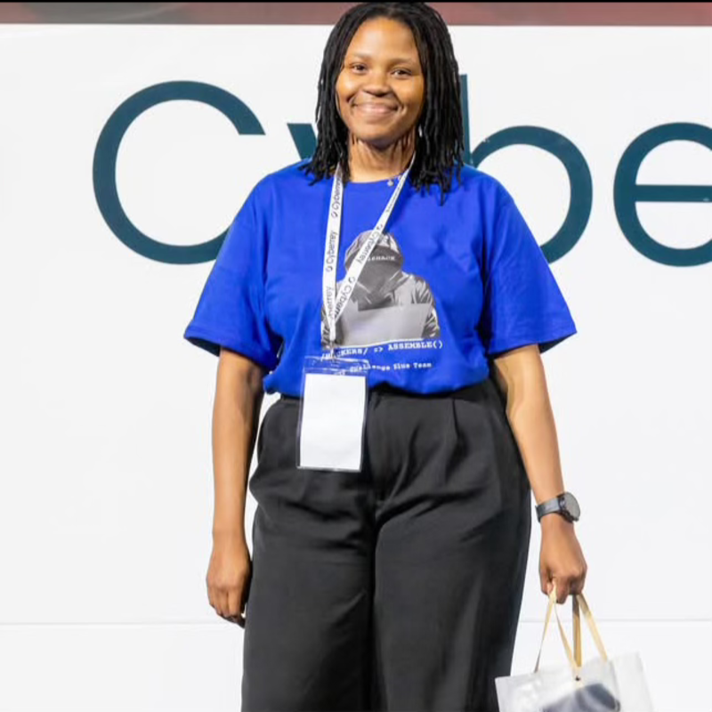

THANDO TWALA
CYBERSECURITY ANALYSTMISSION REPORT: Operative Thando Twala achieved a significant milestone by securing a new role in cybersecurity. Through Hacking Hub's curated roadmaps and peer-to-peer accountability, he gained clarity on the various fields within the cybersecurity landscape.
By regularly collaborating with peers to bridge technical knowledge gaps, Thando converted roadmap milestones into career placement. Looking ahead, he is committed to building daily consistency and deep expertise in offensive security.
THATO
CYBERSECURITY INTERNMISSION REPORT: Joining Hacking Hub in October, Operative Thato immediately "locked in" to the operational routine. Engaging in daily labs, project work, technical presentations, and deadline-driven tasks, she experienced an ecosystem that closely mirrored corporate expectations.
Following tailored 1-on-1 interview preparation, Thato successfully secured a career-defining internship right after graduation in February. Looking ahead, she remains committed to building rock-solid daily consistency.
CATHRINE
SOC ANALYSTMISSION REPORT: Passing the Hacking Hub screening protocol marked a pivotal turning point for Operative Cathrine. Through structured roadmaps, hands-on labs, and continuous peer motivation, she built a deep practical skillset that led directly to securing her role as a SOC Analyst.
Now confidently defending live environments, Cathrine continues to leverage curated resources and roadmaps. Looking ahead, she is committed to sharpening her technical depth in network security and defence.
CALLUM
IT AUDIT & GRC ANALYSTMISSION REPORT: Operative Callum achieved a major milestone by landing an IT Audit role. He attributes this career progress in part to the strong peer-to-peer accountability within Hacking Hub, where observing community members consistently putting in work builds unstoppable personal momentum.
Callum actively engages in the community, learning and sharing expertise during Sunday knowledge-sharing sessions. Looking ahead, he is committed to building deeper technical depth across the IT Audit and GRC domain.

LESOKO
CYBERSECURITY PROFESSIONALMISSION REPORT: Operative Lesoko achieved a major career breakthrough by landing her first cybersecurity job. Attributing this success in part to her time, resources, and accountability within Hacking Hub, she leveraged curated resources and 1-on-1 strategy sessions to accelerate her progress.
The community environment kept her accountable, motivated, and consistently pushed her to learn and improve. Looking ahead, Lesoko is committed to building deep technical expertise in networking and network defence.

KHODY
CYBERSECURITY ENGINEERMISSION REPORT: Khody joined the program seeking to sharpen her strategic approach to security. Through rigid adherence to the daily protocol, she developed a streak of completing one TryHackMe room every single day.
The daily challenges and team motivation strengthened her discipline. Being surrounded by driven cybersecurity enthusiasts expanded her technical depth and helped her approach problems more strategically. Overall, the program genuinely improved her confidence and performance in her career as a security professional.

JOSHUA
SOC ANALYST INTERNMISSION REPORT: Prior to recruitment, Operative Joshua was struggling with the "Isolation Factor"—self-study without support leads to stagnation. By integrating into the Hacking Hub ecosystem, he replaced sporadic study bursts with a consistent operational rhythm.
The result was the successful acquisition of the CompTIA Security+ certification. Joshua has since moved from general study to a focused role as a SOC Analyst Intern, monitoring threats and defending infrastructure.

NONHLANHLA
JUNIOR SECURITY CODE REVIEW ANALYSTMISSION REPORT: Operative Nonhlanhla broke her pattern of sporadic learning bursts, establishing a high-consistency daily study regime within the Hacking Hub. This structured routine directly enabled her to conquer the fear of the unknown, build confidence in complex areas, and secure employment in the industry.
The daily execution paid off with major milestones: securing both the Microsoft Azure Fundamentals (AZ-900) and CompTIA Security+ certifications. Leveraging peer-to-peer accountability and 1-on-1 strategy sessions, she successfully landed a career-defining role as a Junior Security Code Review Analyst.

JAMIELA
GRC ANALYST INTERNMISSION REPORT: Jamiela demonstrated exceptional velocity. Her trajectory shifted dramatically after joining the accountability structure. The blend of network access and career guidance allowed her to bypass typical gatekeeping hurdles.
In just 60 days, she secured a position within a corporate Cybersecurity department, transitioning into Governance, Risk, and Compliance. Her success stands as proof that the right environment accelerates career outcomes.

LINDOKUHLE
Junior Consultant: IT AuditingMISSION REPORT: Lindokuhle identified that environment is the strongest predictor of success. By immersing himself in a network of active industry professionals and aspiring experts, he eliminated the friction of learning alone.
The Hacking Hub environment maintained his consistency, constantly challenging him to acquire new knowledge rather than settling for the basics. He is currently scaling his offensive security skillset.

NOMONDE
JUNIOR SOFTWARE DEVELOPERMISSION REPORT: Nomonde describes her tenure at Hacking Hub as "transformative." By engaging in hands-on Blue Team training, she acquired critical skills in threat hunting and log analysis.
The lab-driven environment provided a simulation of real-world scenarios, allowing her to bridge the gap between theory and practice. These capabilities were directly instrumental in securing her first internship. Even outside of a strictly cyber role, the "security-first" mindset has proven invaluable.

THANDO
JUNIOR TECH RISK & COMPLIANCE ANALYSTMISSION REPORT: Thando's journey highlights the power of structured community support. Facing the complexity of the cybersecurity landscape, she utilized Hacking Hub to build a solid foundation of accountability.
The program provided the resources and peer motivation necessary to build real technical confidence. By staying consistent and engaging with the community, she successfully transitioned into a role as a Junior Tech Risk and Cyber Compliance Analyst, proving that support and challenge are the catalysts for growth.

ZANELE
CLOUD SECURITY PROFESSIONALMISSION REPORT: Zanele entered the field with a focus on high-integrity operations. She found Hacking Hub to be a stronghold of values—integrity, hard work, and grit.
In a domain often fraught with competition, she discovered a safe haven for growth. The network enabled her to upskill securely and connect with peers, facilitating her advancement as a Cloud Security Professional. Her testimony underscores the critical role of a supportive ecosystem in technical mastery.

DILEMO
SOC TRIAGE SPECIALISTMISSION REPORT: Operative Dilemo achieved dual high-impact milestones through Hacking Hub: fully transitioning into cybersecurity employment and securing his Microsoft Certification within 30 days. He highlights 1-on-1 strategy sessions as pivotal "realignment sessions" for keeping perspective and refining execution.
Dilemo proves that clearing the fog of imposter syndrome and locking in yields tangible career results. Looking ahead, he is committed to active peer networking and collaboration to continue leveling up as a cybersecurity professional.

TIMOTHY
GRADUATE TECH ANALYSTMISSION REPORT: Timothy's primary obstacle was procrastination—a common enemy of progress. The Hacking Hub deployed a counter-strategy: strict challenge parameters and mandatory daily accountability protocols.
This external structure internalized into self-discipline. By systematically documenting his learning journey on LinkedIn (OSINT), he increased his visibility. This strategic personal branding resulted in secured employment for 2026, well ahead of his academic graduation timeline.